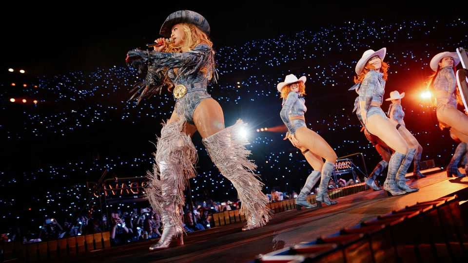

Harry Styles and other megastars now expect you to come to them
Artists are visiting fewer cities on their global tours
June 18th 2026

“STRAIGHT OFF the plane to a new hotel/Just touched down, you could never tell.” When Harry Styles sang those lyrics in 2014, he was already well accustomed to the glamour and grind of a global concert tour. Across his boyband and solo career he has performed more than 600 gigs on six continents. His previous tour visited 79 cities.
But not all is as it was. The 68 concerts on his new tour will be hosted in just seven cities. He is in the midst of a 12-night run at Wembley stadium in London, which ends on July 4th. In August he will go to Madison Square Garden in New York to play 30 concerts.
The British heartthrob is not the only musician travelling less. Many of the biggest pop acts have started to expect their fans to come to them. Beyoncé spent half of her “Cowboy Carter” tour in just three venues. Coldplay performed extensively in certain cities; Olivia Rodrigo will do the same when she heads out on the road in September. Ariana Grande is appearing in just three countries on her tour.

Longer runs in fewer places mean a less gruelling experience for the artist—and a more lucrative one. Touring is more expensive than it has ever been, thanks to a combination of red tape and rising labour and fuel costs. (Fans expect elaborate sets: transporting them across the world is not cheap.) Staying in one place for longer is a way of keeping outlays down and profits up.
For the chosen cities, this means huge windfalls. Mr Styles’s fans are expected to spend £1bn ($1.34bn) on tickets, accommodation and other expenses in London alone, according to Barclays, a bank. For the smaller regional cities bumped from the schedule, such as Manchester and Coventry, it means losing access to megastars and fans’ spending power.
Still, fans do not seem to mind going on the road themselves. Around 25% of the fans watching Mr Styles at Wembley are travelling from outside London, and 28% are turning the occasion into a mini-break. Today’s concert-goers have become cultural tourists. In an age where music is cheap and easy to access, live shows have acquired a new social value. Concerts have become a kind of modern pilgrimage—journeys made out of devotion to an idol. ■
For more on the latest books, films, TV shows, albums and controversies, sign up to Plot Twist, our weekly subscriber-only newsletter